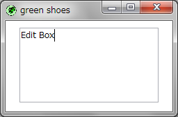

The Green Shoes Manual 1.1.357
EditBox
エディットボックス（Edit box）は、テキストを入力するための幅広い長方形の箱です。 webでは、それらはテキストエリアと呼ばれます。それらは長い記述を入力するための マルチラインエディットボックスです。エッセイでさえ書けます！ 
スタイルを何も設定しなければ、エディットボックスは200ピクセルx108ピクセルのサイズです。 特定のサイズに設定するために:widthと:heightのスタイルを利用することもできます。
Shoes.app do
edit_box
edit_box width: 100, height: 100
end
（ButtonやCheckなどの）他のコントロールはクリックイベントだけを持っていますが、 EditLineやエディットボックス（EditBox）はchangeイベントも持っています。 誰かがタイプしたり箱から削除したらchangeのブロックはいつでも呼ばれます。
Shoes.app do
edit_box do |e|
@counter.text =
strong("#{e.text.size}") + " characters"
end
@counter = para strong("0"), " characters"
end
この例ではブロック内部でtextメソッドを利用していることにも注意してください。 このメソッドは箱に対してタイプしたすべての文字の文字列をあなたに与えます。
エディットボックスの更なるメソッドは以下に一覧にしますが、すべての要素が応答できる、 Commonメソッドの一覧も見てください。
change() { |self| ... } » self
エディットボックスに文字が追加されたり取り除かれるたびに、chenageブロックが 呼ばれます。ブロックには変更されたエディットボックスのオブジェクトであるselfが 与えられます。
focus() » self
エディットボックスにフォーカスを移動します。そのエディットボックスはハイライトされ、 ユーザはエディットボックスにタイプできます。
text() » self
箱にタイプされた文字を文字列として返します。
a stringの文字をエディットボックスに代入します。
Next: EditLine